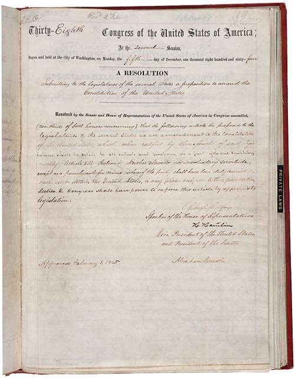
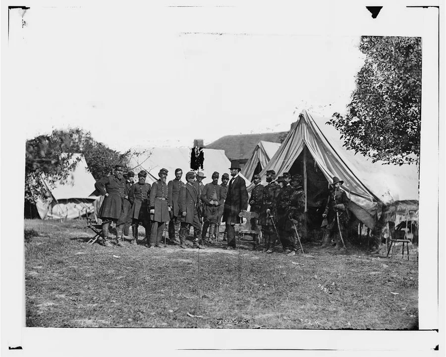

13th · 1865
Abolishes slavery and involuntary servitude, except as punishment for a crime after conviction.
Read the Thirteenth AmendmentAmerican History · Chapter lesson
Explore freedom, human dignity, and the work of rebuilding a nation through history, primary sources, and Christian reflection.
Teacher-guided · 35–45 minutes · Adaptable K–12
By the end, students should be able to explain slavery’s central role in the Civil War, distinguish emancipation from constitutional abolition, and give an example of why rights need protection.
Our classroom covenant: Every person has dignity. Speak truthfully and kindly, listen carefully, and support historical claims with evidence. We can name injustice clearly while speaking courteously about people.
This lesson discusses slavery, racism, war, and loss without graphic images. Explain that slavery treated human beings as property and denied their freedom. Do not ask students to reenact enslavement, repeat racial slurs, or debate whether people deserve equal dignity. No student should have to speak for a race, region, or family history.
Use your academy’s preferred Bible translation for the Scripture readings. Teachers may pause for questions or private reflection.
Historical background: Library of Congress overview · National Park Service: Reconstruction.
1861–1877
These three sources show a constitutional promise, wartime leadership, and an artist’s vision of returning home. Select any image to enlarge it and read its caption.
A photograph records a chosen moment; a painting expresses an artist’s choices. Neither tells the whole story. Include the experiences and actions of formerly enslaved people when explaining freedom.



An amendment changes the Constitution. Emancipation means release from slavery; abolition means ending the institution of slavery. Ratification is formal approval.
Abolishes slavery and involuntary servitude, except as punishment for a crime after conviction.
Read the Thirteenth AmendmentEstablishes citizenship for people born or naturalized in the United States and subject to its jurisdiction; protects due process and equal protection of the laws.
Read the Fourteenth AmendmentProhibits denying a citizen’s vote because of race, color, or previous enslavement. It did not create universal voting rights or prevent all barriers to voting.
Read the Fifteenth AmendmentCompare the Emancipation Proclamation with the Thirteenth Amendment. Who issued or approved each? Where did each apply? Why was a constitutional amendment still necessary?
Write or discuss: Choose one amendment. Identify its promise, a barrier to fulfilling that promise, and an action needed to protect it. Older students should cite the original wording and explain the difference between a legal right and its enforcement.
The proclamation was Lincoln’s wartime executive action with geographic limits. The amendment was proposed by Congress and ratified by states, ending slavery nationwide subject to its stated exception. Threats, violence, and discriminatory practices could prevent people from exercising rights; courts, laws, public officials, and communities all had roles in protecting them. A constitutional promise does not enforce itself.
Christian reflection
Read Genesis 1:27 (people made in God’s image), Micah 6:8 (justice, mercy, and humility), and Mark 12:31 (love of neighbor). How should these teachings shape our treatment of people whose lives and experiences differ from ours?
Christians in this era did not all act alike. Some defended slavery, while others opposed it on Christian grounds. Black churches became important centers of education and community life. Studying these choices calls us to examine actions carefully rather than assuming that a religious claim makes an action just. See the Library of Congress on abolition and the National Park Service on Black churches during Reconstruction.
“With malice toward none; with charity for all”
Lincoln called for care for those harmed by war. How can mercy and reconciliation go together with truth, accountability, and protection for those who have been wronged? Forgiveness does not remove the need to stop injustice.
Practice today: Identify one way to welcome an excluded classmate, tell the truth with kindness, or help repair harm. Explain how your choice expresses love of neighbor.
Answer first, then open each explanation. You may speak, draw, or write your response.
Slavery, including disputes over its expansion and Southern secession to protect it. The Union initially fought to preserve the nation; emancipation became an explicit war aim.
No. It applied to designated areas in rebellion. The Thirteenth Amendment abolished slavery nationwide, with its punishment-for-crime exception.
Thirteenth: abolition. Fourteenth: citizenship, due process, and equal protection. Fifteenth: voting rights cannot be denied on the specified grounds of race, color, or previous enslavement.
People also needed safety, education, fair opportunities, and enforcement of their rights. Violence and discrimination undermined constitutional promises.
Exit ticket: “One promise of freedom was ____. One source that helps me understand it is ____. One way to honor another person’s dignity is ____.”